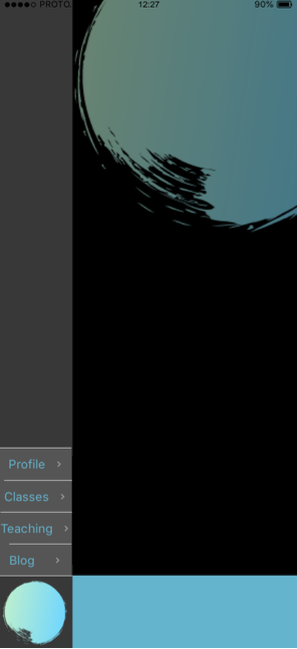
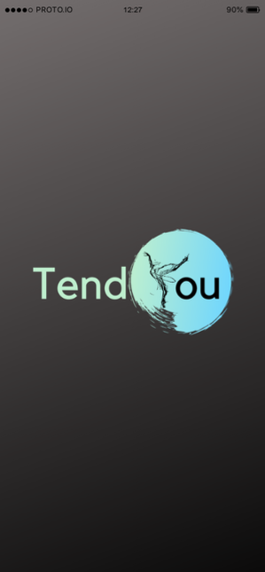

I have always been interested in IT and communication technologies, as well as web design and graphics. As a kid, I use to spend hours experimenting with programs like GIMP and Photoshop on my old PC, and later on, after being first introduced to HTML in school, my creative mind was drawn to the infinite web design options that learning how to code would open up. I have then dedicated my life and my career to the arts and only recently, during the months of lockdown, I found myself going back to video editing and multimedia projects. The current COVID restrictions forced the Performing Arts sector to think outside the box, and not only did this rekindle my passion for internet design, but it also gave me the time to learn new IT skills and how to apply them to my job.
I chose to study with RMIT because it offers an open pathway, many interesting minors, and a lot of flexibility through OUA. It allows me to study this course remotely from Sydney and devise my own study plan during my free time. I am working full time and having those options makes studying much easier for me. I want to start a new career in the field of IT and I am hoping that this Bachelor will open the door to this new chapter of my life.
During my studies with RMIT, I expect to learn more about the field of IT and all the different job opportunities out there to have a better understanding of how the job market looks like. I also expect to learn more job-specific, practical skills that will get me ready for the career pathway I will decide to undertake. At the moment, my main interests are Web Design, Web Development, Internet Communication, and Management.
My goal is to work as a web developer and designer. This would allow me to use both my creative background and what I will learn during this course of study.
Here is a good example of a job I would apply for: Frontend Developer/Designer
The company, Vesanique, is looking for a front-end developer with strong design and graphic experience. The job requires both the ability to convert data to graphical interfaces (Web development) and visual design skills (Web design). This is the kind of job that I would love to get at the end of my course of study with RMIT because it would give me the freedom to express my artistic, creative side while applying the programming and technical skills that I am here to learn.
Programming skills, as well as a good understanding of the social media environment, are required for this position. Moreover, creativity and good communication skills seem to be extremely relevant to this role. Successful candidates would ideally have an IT background, with a minimum of 3 years of experience programming, paired with the ability to create graphic designs and concepts with Adobe CC.
I am currently working full-time as a performing artist and teacher for Sydney Dance Company. I have worked in the Performing Arts industry for the past nine years. I completed my secondary education in Italy where I obtained two diplomas, one in Maths and Science, and one in Dance. As a performer, I consider myself having solid communication skills and a lot of experience with teamwork. I am very creative but also determined and organised. I am fluent in 3 languages (Italian, Spanish, and English), and have a general understanding of German. I worked on many video projects for my company in the past and am confident using video editing platforms like iMovie and Premiere.
Although I feel confident with my creative and communication skills, I completely lack any programming or coding experience. I plan on learning as many technical skills as I can during these three (or more) years of study with RMIT, and eventually, get the qualification (Bachelor) that I need. I also want to develop my graphic and visual design skills and invest more time studying to master programs like Photoshop or Indesign.
I have taken three different personality tests that might help to outline my personal profile: the Myers-Briggs test, the Online learning style test, and the Big Five Personality test.
Here are the results:
The results of these tests did not surprise me, as they confirm what I think my personality traits are. I am very empathetic, positive, and I work well in a team. I am very organised and self-disciplined, but also have a good emotional intelligence, which is why I am the person my colleagues would usually look for to discuss any important matter or concern to bring up with our managers. I consider myself to be very creative, but also pragmatic and objective, and I don’t like wasting time speculating if the job can be done quickly and efficiently. Sometimes I would prioritise other people’s good over my own and that is not necessarily something that I consider to be a positive trait about myself.
These results also confirm my years of experience working in a team. To be efficient in a team you need to be understanding, positive, and open to change your way of doing things if that’s going to be beneficial to the outcome of the project the group is working on. You sometimes need to put your ego aside and understand that ultimately everyone is working towards the same goal. But more importantly, you need to be kind and understand how other people feel and try to create a relaxed, productive working environment.
I know that I am a very easy person to work with, but I sometimes need to be careful not to neglect my own needs in order to accomodate others'. Being too understanding or too available can sometimes be counterproductive. When forming a team I would surround myself with people who share the same values as me and have patience and a good work ethic, and overall, are open to discuss ideas and to change their opinions when needed. I would also need to find a team of emotionally strong and determined people as I tend to absorb all the negativity and insecurity from others.
TendYou is an online platform and mobile app designed to allow users around the world to share their passion for dance at no cost and with no limits. The platform provides users with a space to run their own online dance classes and tutorials in whichever style or level they feel comfortable teaching. For each class taught, users will be rewarded an amount of credit proportional to the number of attendances and length of the class, which they will be able to use to sign up for other classes themselves. This way, TendYou wants to create a rich, creative, supportive online community based on a continuous exchange of ideas accessible to everyone with an internet connection at absolutely no costs.
COVID-19 restrictions had a huge impact on the Performing Arts industry all around the globe. But it did not only impact professionals – many amateurs and dance students found themselves (and in some cases still are) stuck at home and unable to attend the dance classes they so much love. This led to a surge in online dance classes, which had two main outcomes: on one hand, it kept the existing customers on board; on the other hand, it reached a whole new category of customers that were unable to attend in-studio classes before. Parents who couldn’t attend because they had to stay home with their kids, people whose working hours weren’t compatible with their local studio’s timetable, or even former dancers who were too shy to step back in the studio after several years – they all jumped on board and took part of this new online dance community.
TendYou wants to embrace this phenomenon and bring it to another level by making it accessible to literally everyone. The idea is to invert the customers’ behaviour with the credit system and create a platform on which the exchange of ideas and information is valued more than a common paid, on-demand service. A strong social feature will be dedicated to make space for an ever-growing online dance community where you do not need money to upskill or simply do what you love.
  TendYou is an online platform and mobile app that is based on two main functions: the social media feature and the video repository feature. Its main purpose is to provide teachers with a safe online space where to advertise and run their own classes, and students with a wide range of courses to choose from at little to no cost.
The classes can be paid for with credits. Credits can be obtained in two ways:
TendYou will give users the option to upload on-demand tutorials in an online repository, which students will have access to for 24 hours after signing up, as well as scheduling 45 mins long live group classes by setting up a Zoom video conference link through the app itself. Users who sign up for the class will be automatically sent the link 10 minutes prior the beginning of the class to limit the risk of the link being leaked.
After each class, students will be required to fill up a health and safety check and will be encouraged to review the class to assist their peers in future classes selection. Users will also have access to an interactive blog and they will be able to create and participate in new threads, hopefully encouraging the exchange of ideas and opening new, interesting discussions. Users will also be able to create and customise their own profile, share their experiences and link videos they think are worth sharing with their peers. This social media feature is intended to enhance the openness of conversation and perhaps even create real-life bonds.
The mobile app will make the service even more easily accessible, allowing users to take and teach classes or tutorials from wherever they are, and encouraging them to use the social media feature, too. This app is not intended to be used as an instant messaging app, hence why users will only be allowed to communicate with each other through posts and to discuss quality, dance-related content.
The risk that comes with opening up an e-learning platform for everyone to teach is the potential low standard for the quality of teaching itself. It will be in the users’ best interest to leave a review for each class they attended to help direct each other towards the best instructors – as Amazon’s customers do when reviewing purchased products. A strict Code of Conduct will be in place to protect users from inappropriate actions and behaviours while using this service.
The app can be developed using Xcode or Swift, and it will have to be linked to an external service like Zoom to allow the video conferences to happen. An equivalent web platform can be developed using Wix, or from scratch using GitHub. GitHub would be ideal as it gives more flexibility in creating a personalised digital currency system – cryptocurrency tokens connected to a DekuSan wallet. An online repository is also needed to store the uploaded tutorials.
Both programming and web design/development skills are required. The app will be built using the Swift programming language via Xcode (and therefore developed on a MacOS computer). The front-end of the app will feature graphics and UI created on Photoshop and Canva, and a cloud-based back-end (e.g. Firebase) will be created in order to store the big amount of video tutorials that users will have access to.
The related web page will be designed and developed with HTML and CSS on GitHub, or using web development platforms like Wix. It will feature the same key graphics and colour palette as the app, and it will allow users to access the same online repository of videos on the cloud.
This project aims to create a full-fledged, free and accessible online dance community in which everyone is allowed to share their own experience and knowledge and learn from each other at little to no expense. There should be no limits when following your passion, and this app will help everyone with a good internet connection to do what they love.
A continuous exchange of information, skills and ideas, will slowly build a potentially unlimited online repository accessible whenever you want and from wherever you are in the world. After all, dance, as many other art forms, is constantly evolving and refining itself through the exchange of ideas. Perhaps this app will facilitate this process creating an even more unique online, open discourse inspiring more great innovations in the dance community.